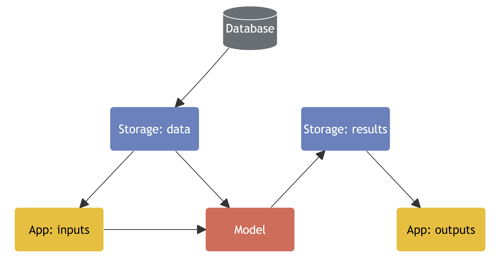

Using R and Python to model future hospital activity
EARL Conference 2024
YiWen Hon
Matt Dray
Tom Jemmett
5 September 2024
The New Hospital Programme (NHP)
A manifesto commitment
Future activity must be modelled
Need consistency across schemes
::::
Our challenges
28 hospitals currently using the model
Model is being developed whilst in production
Model is very complex - technically, and for end users
Tools and platforms
Data pipelines: {targets}
, SQL
Model: Python
, Docker
Apps: {shiny} and {golem}
, Posit Connect
Infrastructure and storage: Azure
Documentation: Quarto
Version control and collaboration: Git
, GitHub

Next
Forecast regionally and nationally
Move data and pipelines into Databricks
Open-source model code
Thank you
Using R and Python to Model Future Hospital Activity: The New Hospital Programme Demand and Capacity Model
YiWen Hon
,
Matt Dray
and
Tom Jemmett
The Strategy Unit
,
NHS ML